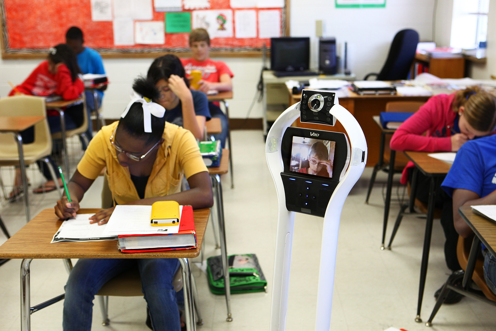

|
| HOME |
IMPACTS |
NEGATIVE CONNOTATIONS |
ABOUT THE CREATOR |
REFERENCES |
|---|
|
|
EDUCATIONAL IMPACTS
Persistence and retention
|
|
Easy implementation.
The system offers a flexible, affordable, and simple solution. Training students and instructors is a relatively quick process, while supporting documentation.(EDUCAUSE,2018) Minimal impact on instructors. Although instructors require some training to integrate the system into their classroom, its actual use is typically easier for instructors than extending deadlines, changing assignments, or scheduling alternate exam days.(EDUCAUSE,2018) Empowerment for student-support staff. In terms of the services we provide students on our campus, the pilot helped us identify and fill a gap: It let us provide immediate, short-term assistance for students who were experiencing temporary setbacks. The telepresence robot used in our study offered a viable solution that empowered our staff to help students who may have had no other options.(EDUCAUSE,2018) |

|